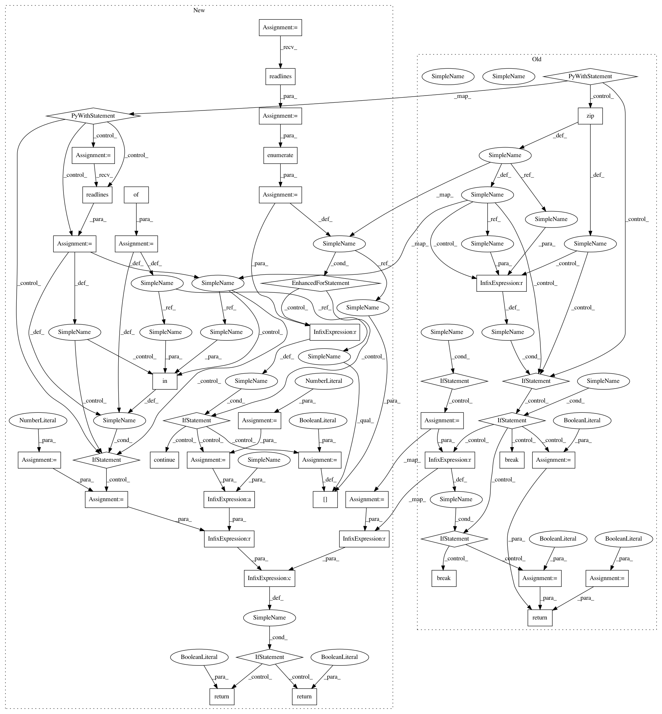

4019c168d3106f6247133c9747298f6438a29384,hicexplorer/test/general/test_hicMergeLoops.py,,are_files_equal,#Any#Any#Any#Any#,12
Before Change
def are_files_equal(file1, file2, delta=1, skip=0):
equal = True
if delta:
mismatches = 0
with open(file1) as textfile1, open(file2) as textfile2:
for i, (x, y) in enumerate(zip(textfile1, textfile2)):
// if x.startswith("File"):
// continue
if i < skip:
continue
if x != y:
if delta:
mismatches += 1
if mismatches > delta:
equal = False
break
else:
equal = False
break
return equal
def test_loop_narrow_peak():
outfile = NamedTemporaryFile(suffix="out", delete=True)
After Change
def are_files_equal(file1, file2, delta=1, skip=0):
lines_file1_dict = {}
mismatches = 0
matches = 0
line_count_file1 = 0
with open(file1, "r") as textfile1:
file_content = textfile1.readlines()
for i, line in enumerate(file_content):
if i < skip:
continue
lines_file1_dict[line] = True
line_count_file1 += 1
with open(file2, "r") as textfile2:
file_content = textfile2.readlines()
for i, line in enumerate(file_content):
if i < skip:
continue
if line in lines_file1_dict:
matches += 1
else:
mismatches += 1
if mismatches < delta and line_count_file1 - delta <= matches:
return True
else:
return False
def test_loop_narrow_peak():
outfile = NamedTemporaryFile(suffix="out", delete=True)
outfile.close()
In pattern: SUPERPATTERN
Frequency: 3
Non-data size: 46
Instances
Project Name: deeptools/HiCExplorer
Commit Name: 4019c168d3106f6247133c9747298f6438a29384
Time: 2019-08-22
Author: wolffj@informatik.uni-freiburg.de
File Name: hicexplorer/test/general/test_hicMergeLoops.py
Class Name:
Method Name: are_files_equal
Project Name: deeptools/HiCExplorer
Commit Name: 4019c168d3106f6247133c9747298f6438a29384
Time: 2019-08-22
Author: wolffj@informatik.uni-freiburg.de
File Name: hicexplorer/test/general/test_chicViewpointBackgroundModel.py
Class Name:
Method Name: are_files_equal
Project Name: deeptools/HiCExplorer
Commit Name: 4019c168d3106f6247133c9747298f6438a29384
Time: 2019-08-22
Author: wolffj@informatik.uni-freiburg.de
File Name: hicexplorer/test/general/test_hicMergeLoops.py
Class Name:
Method Name: are_files_equal
Project Name: deeptools/HiCExplorer
Commit Name: 4019c168d3106f6247133c9747298f6438a29384
Time: 2019-08-22
Author: wolffj@informatik.uni-freiburg.de
File Name: hicexplorer/test/general/test_hicValidateLocations.py
Class Name:
Method Name: are_files_equal